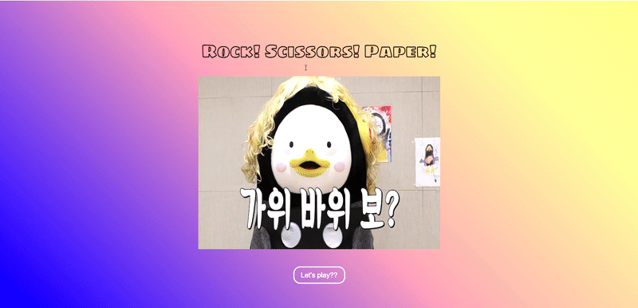

HTML/CSS, Javascript, bootstrap을 사용해 리스트를 작성하고
삭제 또는 체크 기능을 구현하고 또 체크된 상태와 아닌 상태를
분류할 수 있게 구현했습니다.
랜덤숫자 맞추기(반응형)
HTML/CSS, Javascript를 사용해 만들었습니다. 사용자는 5번안에
숫자를 맞춰야 하고 사용자가 입력한 숫자보다 크면 "up" 작으면
"down"이 나오고 5번안에 맞추면 "정답입니다!!!"가 출력되며
1보다 작고 100보다 작은 값을 입력하면 "1부터 100사이의 숫자만
입력해주세요"가 출력되는 미니게임을 구현했습니다.
뉴스와 서울날씨(반응형)
HTML/CSS, Javascript, Jquery를 사용해 만들었습니다.
openWeatherAPI와 News API를 받아 만들었으며 현재는 서울날씨
현재온도, 최고/최저 온도, 풍속, 구름량 이 출력되고 또 밑에는
뉴스를 출력해 카테고리 별로 볼 수 있으며 또 검색창에 원하는
검색어를 입력하면 검색어에 맞는 뉴스가 출력됩니다. 또 맨
상단에는 현재 날짜와 시간이 출력되게 구현했습니다.
자기소개 페이지(반응형)
HTML/CSS, Javascript를 사용해 만들었습니다. 페이지가 시작되면
자동으로 animation이 실행되는 함수와 마우스 스크롤이 일정구간
이동했을때 animation을 실행하는 자기소개 페이지입니다.

가위 바위 보 게임(반응형)
React를 사용해 만들었습니다. State, Component, props를 사용해
제작하였으며 사용자가 게임시작 버튼을 누르고 가위, 바위, 보
중에 하나를 선택하면 컴퓨터는 랜덤으로 가위, 바위, 보를
선택합니다. 이긴사람은 빨간색, 진 사람은 초록색, 비기면
보라색으로 표시가 되는 미니게임을 구현했습니다.
봉구스 밥버거 리뉴얼(반응형)
React를 사용해 만들었습니다. State, Component, props를 사용해
제작하였으며 json을 만들어 메뉴에 데이터를 만들어 json 파일을
가져와 메뉴를 구성했으며, SPA로 작성하였으며, 카카오맵 API를
받아 카카오 맵을 구현했습니다. 기존 봉구스밥버거 사이트를
리뉴얼해 만들었습니다.
영화소개페이지(반응형)
React를 사용해 만들었습니다. State, Component, redux를 사용해
제작하였으며 movie API를 Axios로 받아 사용하였습니다. API 키가
중요하므로 API KEY값을 보이지 않게하고 구현하고 SPA로
작성하였습니다. 인기있는 영화, 순위 영화, 다가오는 영화 목록을
볼 수 있고 영화를 선택하면 영화상세 설명과 예고편을 볼 수
있으며 MOVIES 항목에서 영화를 검색할 수 있도록 구현했습니다.